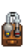
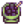
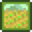
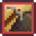

Yetenekler
| Başlangıç Kılavuzu |
Oyuncu | Seçenekler | Kontroller | Mobil Kontroller |
Sağlık | Enerji | Yetenekler | Gün Döngüsü |
Yetenekler, belirli aletlerin kullanımı veya faaliyetlerle veya Kitapların okunması ile seviyesi artırılabilen oyuncu nitelikleridir. Her yetenek, 10 seviyeye sahiptir. Yeni bir seviye için yeterli kadar deneyim puanı (DP) kazanıldığında yeni yetenek seviyesi artışı anında yapılır ve envanterin yetenekler sekmesinde gözükür. Oyuncu, bir yetenekte seviye atladığında "Üzerine düşünecek yeni fikirlerin var..." bildirimi gönderilir. Yeni yetenek seviyesi artışında o yetenekle ilgili aletlerin uzmanlığına anında artış yapılır.
Bir yetenek seviyesinin arttığı günün gecesinde oyuncu yatağa gittiğinde bu seviye artışı ile ilgili bir ekran çıkar ve oyuncuya ekstra olarak oluşturma veya yemek tarifi verilir. Seviye 5 ve 10'da oyuncular, iki uzmanlık alanından birini seçebilir. Her uzmanlık alanının çeşitli ögelerin satış fiyatını artırması gibi kendi avantajları bulunur. Not edilmelidir ki tarif öğrenilmesi veya uzmanlık alanı avantajları, ertesi güne kadar etkisini göstermez. Dolayısıyla yeteneğin seviyesinin artırıldığı ve gönderilen çeşitli ögelerin satış fiyatını artıran bir uzmanlık alanı seçildiğinde bu yeteneğin seviyesinin artığı günde gönderilen ögeler, yeni gelen bonustan yararlanmaz.
Her yeteneğin seviyelerinin istediği deneyim puanı miktarı aynıdır:
|
|
Yetenekler, belirli yemekler yiyerek de geçici olarak yükseltilebilir. Bu yetenekler, oyuncunun saat arayüzünde birer etki ikonu olarak gözükür. Yetenekler, oyuncunun oyun menüsündeki yetenekler sekmesinden de incelenebilir.
| Ekin hasat ederek ve hayvanlara bakarak yükseltilir. Her seviyede +1 çapa ve sulama kabı uzmanlığı sağlanır (bkz. Aletler). | |
| Taşları kırarak yükseltilir (genelde bir kazma ile yapılır). Her seviyede +1 kazma uzmanlığı sağlanır. | |
| Doğadan ögeler toplamak ve balta ile ağaçları kesip odun toplayarak yükseltilir. Her seviyede +1 balta uzmanlığı sağlanır. | |
| Balık tutarak veya Yengeç Çömleğindeki balıkları toplayarak yükseltilir. Her seviyede +1 olta uzmanlığı sağlanır. | |
| Canavarlara karşı savaşarak yükseltilir. |
Alet Uzmanlığı
Alet uzmanlığı, bir aleti kullanırken harcanan enerji miktarıdır.
Yeteneğin 0. seviyesinde kazma, balta ve çapa kullanımında 2 enerji harcanır. Başarısız kullanımlarda (örn. birinci seviye bir balta ile Büyük Kütük kırmaya çalışmak) 1 enerji harcanır. Her olta atışında olta suya atılamasa da 8 enerji harcanır. Birinci seviye Sulama Kabı kullanımında 2 enerji harcanır.
Her yetenek seviyesinde belirli aletlerde (aşağıda gösterilmiştir) enerji kullanımı 0,1 enerji azalır. Yeteneklerin 10. seviyeden sonrasında da (Etkiler ile ulaşılabilir) enerji kullanımı azalmaya devam eder. Örneğin, Madencilik seviye 13'te Kazma kullanımı 0,7 enerji harcar (Oyun, enerjinin kesirli değerlerini kaydeder ancak oyuncuya en yakın sayıya yuvarlanmış hâli gösterilir.
Sulama Kabınının etki alanını artırmak için güçlendirmek, güçlendirme başına 2 enerji harcar. Her yetenek seviyesi başına 0,1 daha az enerji harcar. Çiftçilik seviye 0'da ilk seviye sulama kabı ile 1 kare sulamak için 2 enerji harcanır ve maksimum güçlendirilmiş iridyum sulama kabında da 18 kere sulamak için 10 enerji harcanır. Çiftçilik seviye 10'da ilk seviye sulama kabı 1 enerji ve iridyum sulama kabı da 9 enerji (10 - yetenek seviyesi başına 0,1) harcar. Yükseltilmiş bir sulama kabını yapabildiğinden daha az kare sulamak için kullanmak, o kadar kare sulayabilen birinci seviye sulama kabı yükseltmesi ile aynı enerjiye mal olur (tek kare her zaman birinci seviye sulama kabı ile aynı, 5 kare her zaman çelik sulama kabı ile aynı). Boş bir sulama kabını kullanmaya çalışmak veya bir sulama kabını doldurmak enerji harcamaz.
Balta, Kazma veya Çapa geliştirildiğinde harcanan enerji miktarını değiştirmez. Balta ve Kazmanın geliştirilmiş gücü ve Çapanın güçlendirilmiş alan etkisi ile aynı görevi daha az seviye bir aletle yapmaktan daha az enerji harcar.
Not edilmelidir ki bütün çapalar güçlendirilmiş olsa da bir kareyi çapalamak için kullanılmış da olsa aynı enerji miktarı harcar (Çiftçilik seviye 0'da 2 enerji, Çiftçilik seviye 10'da 1 enerji).
Bütün oltalar aynı enerji miktarı harcar (Balıkçılık seviye 0'da 8 enerji, Balıkçılık seviye 10'da 7 enerji).
Etkilenen AletlerÇiftçilik Toplayıcılık Balıkçılık Madencilik |
Etkilenmeyen AletlerAşağıdaki aletler, enerji harcamaz:
Aşağıdaki aletler, her zaman 4 enerji harcar: |
Yengeç Çömleğini Yem ile doldurmak veya çömleği hasat etmek, enerji harcamaz.
 Çiftçilik
Çiftçilik
- Ana makale: Çiftçilik
Çiftçilik yeteneği, ekin hasat etmekle ilgilidir. Hayvanlara bakmak da deneyim puanı kazandırır: çiftlik hayvanlarını sevmek, sütünü sağmak ve kırpmak veya bir ahır veya kümesteki hayvan ürününü almak, 5 deneyim puanı sağlar. Kendi başına çapa veya sulama kabı kullanmak deneyim puanı sağlamaz. Her seviyede +1 çapa ve sulama kabı uzmanlığı sağlanır.
| Seviye 1 | Seviye 2 | Seviye 3 | Seviye 4 | Seviye 5 | |
|---|---|---|---|---|---|
| Oluşturma Tarifleri: | Oluşturma Tarifleri: | Oluşturma / Yemek Tarifleri: | Oluşturma Tarifleri: | Bir uzmanlık alanı seç: | |
Hayvan ürünlerinin ederi %20 artar |
Ekinlerin ederi %10 artar. (Bütün Sebzeler, Çiçekler ve doğadan toplanmamış Meyveler için geçerlidir.) | ||||
| Seviye 6 | Seviye 7 | Seviye 8 | Seviye 9 | Seviye 10 | |
| Oluşturma Tarifleri: | Oluşturma Tarifleri: | Oluşturma Tarifleri: | Oluşturma Tarifleri: | Çiftlik Sahibi: | Filiz Kökleyici: |
 Yağ Üreteci |
Kümes hayvanları ile daha hızlı arkadaş olunur. Kuluçka süresi (Kuluçka Makinesi, Deve Kuşu Kuluçka Makinesi, Balçıkça Kuluçka Makinesi için) yarı yarıya azalır (Ayrıca kümes ürünlerinin kalitesini geliştirir, bu bölümü inceleyiniz.) |
Zanaat ürünlerinin (şarap, peynir, yağ vb.) ederi %40 artar. (Çoban uzmanlığı Yağı etkilemez.) | |||
Ahır hayvanları ile daha hızlı arkadaş olunur. Koyunlar daha hızlı yün üretir. (Ayrıca ahır ürünlerinin kalitesini geliştirir, bu bölümü inceleyiniz.) |
Tüm ekinler %10 daha hızlı olgunlaşır. | ||||
 Madencilik
Madencilik
- Ana makale: Madencilik
Madencilik yeteneği, taş kırmakla ilgilidir. Her seviyede +1 kazma uzmanlığı sağlanır. Madencilik yeteneğinin deneyim puanları taş yok edildiğinde verilir. Taşın kazma, bomba veya canavarlar tarafından yok edilmesine bakılmaz.
Farklı taş türleri, farklı sayıda deneyim puanı sağlar
| Seviye 1 | Seviye 2 | Seviye 3 | Seviye 4 | Seviye 5 | |
|---|---|---|---|---|---|
| Oluşturma Tarifleri: | Oluşturma Tarifleri: | Oluşturma Tarifleri: | Oluşturma Tarifleri: | Bir uzmanlık alanı seç: | |
|
| ||||
| Seviye 6 | Seviye 7 | Seviye 8 | Seviye 9 | Seviye 10 | |
| Oluşturma Tarifleri: | Oluşturma Tarifleri: | Oluşturma Tarifleri: | Oluşturma Tarifleri: | Madenci: | Yerbilimci: |
|
| ||||
|
| ||||
 Toplayıcılık
Toplayıcılık
- Ana makale: Toplayıcılık
Toplayıcılık yeteneği, vadi boyunca doğada bulunan ögeleri toplayarak veya balta ile ağaç keserek yükseltilir. Her seviyede +1 balta uzmanlığı sağlanır.
| Seviye 1 | Seviye 2 | Seviye 3 | Seviye 4 | Seviye 5 | |
|---|---|---|---|---|---|
| Oluşturma Tarifleri: | Yemek Tarifleri: | Oluşturma Tarifleri: | Oluşturma Tarifleri: | Bir uzmanlık alanı seç: | |
|
|
| |||
| Seviye 6 | Seviye 7 | Seviye 8 | Seviye 9 | Seviye 10 | |
| Oluşturma Tarifleri: | Oluşturma Tarifleri: | Oluşturma Tarifleri: | Oluşturma Tarifleri: | Korucu: | Toplayıcı: |
|
|
| |||
|
| ||||
Deneyim Puanları
Deneyim puanları (DP) aşağıdakilerde elde edilir:
- 12 DP bir ağaç devirme için (tamamı tek seferde ağacı düşüren son vuruş ile elde edilir.)
- 1 DP bir ağaç devirme sonrasında bir kütük kaldırma için.
- 25 DP Büyük Kütük ve Büyük Tomruk kesmesi için.
- 7 DP yerden her toplanan eşya için.
- Eğer elde eden kişi toplanan eşyayı ikiye katlarsa ikisi için toplam 7 deneyim puanı elde eder.
- 3 DP Bahar mevsimi Kömürözü Ormanı bölgesinden hasat edilen her Yeşil Soğanı için .
Toplayıcılık için elde edilen 7 DP, yalnızca yerde duran görünür öğeler için geçerlidir ve yalnızca oyuncu onlara tıklarsa alınırlar; toplanmadan yerde duran nesneler için uygulanmaz. (sallama ile düşürülmüş) olanlar otomatik olarak Çekim ile oyuncunun envaterine eklenir.
7 deneyim puanı kazanımı içeren belirli nesneler:
- Stardew Valley boyunca rastgele oluşan ve toplanan standart nesneler.
- Yabani Tohumlar dan yetişen nesneler (eğer bir Garden Pot değilse, bu durumda 0 DP).
- Kumsal bölgesinden toplanan tüm eşyalar.
- Çiftlik Mağarası içerisinden elde edilen tüm meyveler, (eğer meyve yarasaları seçeneği seçildiyse)
- Yermantarı.
- Madenler ve Kafatası Mağarası bölgelerinde yerden toplanan eşyalar: Kırmızı Mantar, Mor Mantar, ve Eğrelti Otu.
Aşağıdaki nesneler herhangi bir toplayıclık deneyim puanı sağlamaz:
- Çalılardan alınan Böğürtlenler ve Ahududular (Oyuncu tarafından toplansa da hayvanlar tarafından düşürülse de)
- Üzüm Yetiştirici den elde edilen Üzüm ler.
- Yeri kazarak elde edilen Kar Patatesi ve Kış Kökü gibi nesneler.
- Garden Pot da yetişen nesneler.
- Çiftlik Mağarası ndan toplanan mantarlar (Eğer mantar seçeneği seçildiyse).
- Mantar Ağacı nı keserek ya da ona vurarak elde edilen mantarlar.
- Yerde beliren toplanamaz nesneler. Madenler ve Kafatası Mağarası nda bulunan; Kuvars, Yüzey Kristali, Donmuş Gözyaşı, Kırmızı Kuvars ve Dinozor Yumurta ları. -- Oluşan bug sonucunda elde eden kişiye 7 DP veren bir durum haricinde.
- Canavarlar ı öldürerek elde edilen toplanabilir nesneler.
 Balıkçılık
Balıkçılık
- Ana makale: Balıkçılık
Balıkçılık yeteneği; bir olta veya Yengeç Çömleği ile Balık, Çöp, Su Yosunu, Yeşil Su Yosunu ve Beyaz Su Yosunu yakalayarak yükseltilir.
Her seviyede +1 Olta Uzmanlığı sağlar, minimum balık uzunluğunu ve mantar çubuğu uzunluğunu artırır ve bir balığın maksimum ısırma süresini azaltır. Balıkçılık yeteneği aynı zamanda gümüş veya altın kalitedebalık bulma ihtimalini artırır.
| Seviye 1 | Seviye 2 | Seviye 3 | Seviye 4 | Seviye 5 | |
|---|---|---|---|---|---|
| Oluşturma Tarifleri: | Oluşturma Tarifleri: | Oluşturma / Yemek Tarifleri: | Oluşturma Tarifleri: | Bir uzmanlık alanı seç: | |
| Olta atabilme mesafesi bir kare artar |
|
|
|
|
|
| Seviye 6 | Seviye 7 | Seviye 8 | Seviye 9 | Seviye 10 | |
| Oluşturma Tarifleri: | Oluşturma Tarifleri: | Oluşturma Tarifleri: | Oluşturma / Yemek Tarifleri: | Balıkçı: | Tuzakçı: |
|
|
|
|
|
|
|
| ||||
 Savaşma
Savaşma
- Ana makale: Savaşma
Savaşma yeteneği, Canavarlara karşı savaşarak yükseltilir. Bazı seviyelerde oyuncunun toplam Sağlığına artış sağlanır.
| Seviye 1 | Seviye 2 | Seviye 3 | Seviye 4 | Seviye 5 | |
|---|---|---|---|---|---|
| Nesne Tarifleri: | Nesne Tarifleri: | Yemek Tarifleri: | Nesne Tarifleri: | Bir uzmanlık alanı seç: | |
|
(Not: Artış çarpımsaldır. Formülü: kritikŞansı = kritikŞansı * 1,5) | ||||
| Seviye 6 | Seviye 7 | Seviye 8 | Seviye 9 | Seviye 10 | |
| Nesne Tarifleri: | Nesne Tarifleri: | Nesne Tarifleri: | Nesne / Yemek Tarifleri: | Savaşçı: | Öncü: |
|  Mürekkepli Makarna |
(Savaşçı ile çarpımsal olarak birleşir) |
| |||
|
(2x kritik vuruş hasarı) | ||||
Uzmanlık Alanı Değiştirme

Lağımda bulunan Belirsiz Heykelciği ile oyuncu uzmanlık alanını değiştirebilir.  10.000g karşılığında heykelden değiştirilecek yetenek seçilebilir. Ardından oyuncu o gün yatağa gittiğinde heykelde seçilen yetenek için seviye 5'in "Bir uzmanlık alanı seç" ekranı ve ardından seviye 10'un ekranı çıkar.
10.000g karşılığında heykelden değiştirilecek yetenek seçilebilir. Ardından oyuncu o gün yatağa gittiğinde heykelde seçilen yetenek için seviye 5'in "Bir uzmanlık alanı seç" ekranı ve ardından seviye 10'un ekranı çıkar.
Heykelin menüsünde yalnızca herhangi bir uzmanlık alanı seçilmiş yetenekler çıkar. Oyuncu değiştireceği uzmanlık alanını seçtiğinde önceki uzmanlık alanının avantajları kaybolur. Satış fiyatlarını etkileyen uzmanlık alanları, uzmanlık alanının değiştirildiği gün gönderi kutusuna atılan ögelerin satış fiyatını etkilemeyecektir.
Bir yetenekte seviye atladıktan sonraki gün oyuncunun dolu enerji ile uyanması gibi bu heykel kullanıldığında da sonraki gün oyuncu dolu enerji ile uyanır.
Yetenek Ünvanları
Toplam yetenek seviyelerine göre oyuncu menüsüned yetenekler sekmesinde oyuncunun isminin altında bir ünvan gözükür. Oyuncunun seviyesi ve ünvanı aynı zamanda oyuncu menüsündeki envanter sekmesinde oyuncunun üzerine dokunulduğunda da gözükür.
Seviye ise şöyle hesaplanır: (çiftçilikSeviyesi + balıkçılıkSeviyesi + toplayıcılıkSeviyesi + savaşmaSeviyesi + madencilikSeviyesi + şansSeviyesi) / 2
Sonuç sayı 0,5 ile bitiyorsa kesirli kısım atılır ve yalnızca tam sayı kısmı ile çalışır.
Ünvanlar şu şekildedir:
- seviye ≥ 30: Çiftlik Kralı
- seviye > 28: Ekin Uzmanı
- seviye > 26: Ziraatçi
- seviye > 24: Çiftçi
- seviye > 22: Çiftlik Sahibi
- seviye > 20: Ekici
- seviye > 18: Çiftlik Uzmanı
- seviye > 16: Irgat
- seviye > 14: Çayır Uzmanı
- seviye > 12: Arazi Sahibi
- seviye > 10: Fidancı
- seviye > 8: Çiftlik Çalışanı
- seviye > 6: Kovboy
- seviye > 4: Hödük
- seviye > 2: Çaylak
- seviye ≤ 2: Acemi
En yüksek ünvan olan Çiftlik Kralı'na ulaşmak için şans seviye 10 ve bütün yeteneklerde seviye 10 gerekirdi. Ancak burada bahsedilen şans seviyesi, günlük şans değildir ve oyunda bulunmayan bir şeydir. Oyun kodunda Şans, tıpkı diğer yetenekler gibi oyunda altıncı bir yetenek olarak gözükür. Oyuna eklenmediğinden en fazla seviye 25'e çıkılabilir ve elde edilebilir en yüksek ünvan da "Çiftçi" olur.
Ustalık
- Ana makale: Ustalık Mağarası
Oyuncu bütün yeteneklerde maksimum seviyeye ulaştığında Kömürözü Ormanı'ndaki bir kapıyı açarak Ustalık Mağarası'na girebilirler. Burada oyuncular, ekstra deneyim puanları ile ustalık seviyelerini yükseltebilirler. Çiftçilik deneyim puanları ustalık puanlarına %50 oranda katkı sağlarken diğer yeteneklerin deneyim puanları ustalık puanlarına %100 oranda katkı sağlar.
| Seviye | Bu Seviye İçin Gereken Ustalık Puanı | Bu Seviyeye Kadar Gereken Toplam Ustalık Puanı |
|---|---|---|
| 1 | 10.000 | 10.000 |
| 2 | 15.000 | 25.000 |
| 3 | 20.000 | 45.000 |
| 4 | 25.000 | 70.000 |
| 5 | 30.000 | 100.000 |
Ustalık seviyeleri, beş yetenekte usta olmak ve farklı özelliklerin kilidini açmak için kullanılır. Ulaşılmış ustalıklar, oyuncunun envanterinin Özel Eşyalar & Güçleri sekmesinde gösterilir.
| İsim | Ödüller | ||
|---|---|---|---|
|  Çiftçilik Ustalığı |
İridyum Tırpan | Herhangi bir ekini hasat etmek için kullan. Aynı zamanda saman elde etmek için de kullanışlıdır. | |
| Lütufların Heykeli Tarifi | Bu heykele dokunmak, her gün özel bir lütuf verir. | ||
| Artık Altın Hayvan Krakerleri bulabilirsin, bu krakerler bir çiftlik hayvanının ürününü kalıcı olarak iki katına çıkarır. Domuzlarda işe yaramaz. | |||
|  Madencilik Ustalığı |
Cüce Kralın Heykeli Tarifi | Her gün iki madencilikle alakalı güçlendirmeden birini seç. | |
| Ağır Ocak Tarifi | Sıradan ocaktan daha randımanlı çalışır. Her kullanım için 25 parça cevher ve 3 kömür gerekir. | ||
| Cevher bulunduran taşlar artık iki kat cevher içerir. | |||
Toplayıcılık Ustalığı |
Mistik Ağaç Tohumu Tarifi | Özel bir ağaç yetiştirmek için kullanılabilir. | |
| Hazine Totemi Tarifi | Kazılabilir arazide kullanıldığında hazine notası halkası oluşturur. | ||
| Artık içlerinde daha üst düzey eşyalar bulunan Altın Gizem Kutularını bulabilirsin. | |||
Balıkçılık Ustalığı |
Gelişmiş İridyum Olta | Bunu suda balık tutmak için kullan. Aynı anda iki mantar kullanabilirsin. | |
| Meydan Okuma Yemi Tarifi | 'Mükemmel' bir yakalama, elde edilecek balığın üç katını verir. Ancak bir balık "balıkçılık çubuğu"ndan her kaçtığında, elde edilecek miktar azalır. | ||
| Artık Altın Balıkçı Sandıklarıyla karşılaşabilirsin | |||
Savaşma Ustalığı |
Örs Tarifi | "Aksesuarları "yeniden şekillendirmene" yarar. Her kullanım için 3 iridyum külçesi gerekir. | |
| Mini Demir Ocağı Tarifi | Artık cüce dökümhanesini evinin rahatlığında kullanabilirsin. | ||
| Aksesuarları kullanmak için yeni bir ekipman yuvası açar. Maceraların esnasında sana özel güçler sağlayacak aksesuarlar bulabilirsin | |||
Geçmiş
- 1.3.27: Belirsizlik Heykelciği eklendi. Normal bir ağaç güdüğünü kırmak artık +1 Toplayıcılık veriyor.
- 1.4: Maden Uzmanı uzmanlığının Madenlerde kırılmış taşları etkilememesi düzeltildi
- 1.4.1: Uzmanlık alanı bonusları artık Belirsiz Heykelciği'nde uzmanlık alanı değiştirildiğinde anında kayboluyor. Heykelin menüsünde artık yalnızca uzmanlık seçilmiş yetenekler gösterilecek.
- 1.6: Ustalıklar eklendi. Seviye atlayınca bildirim gönderilmesi eklendi. Deneyim puanları artık Kitaplardan da kazanılabilir. Yetenek ünvanları seviyelerinde bir değişiklik yapıldı.
- 1.6.4: Bütün deneyim puanları artık ustalık deneyim puanına %50 oranda katkı sağlıyor.
- 1.6.6: Artık yalnızca çiftçilik yeteneğinin deneyim puanları ustalık deneyim puanına %50 oranda katkı sağlıyor.
| Yetenekler ve İstatistikler | |
|---|---|
| Yetenekler | Balıkçılık • Çiftçilik • Madencilik • Savaşma • Toplayıcılık |
| İstatistikler | Ağırlık • Çekim • Dokunulmazlık • Hız • Kritik Vuruş Gücü • Kritik Vuruş Şansı • Saldırı • Savunma • Şans |